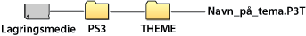

Indstillinger > Temaindstillinger
Temaindstillinger
Gør det muligt at justere indstillinger for at tilpasse XMB™-skærmen til elementer som baggrund eller skrifttype for skærmtekst.
Tema
Vælg designelementer, f.eks. ikoner eller baggrund, der skal vises på XMB™-skærmen. Temaet kan justeres ved hjælp af en af følgende metoder.
Valg af præinstalleret tema
Vælg et tema, som er præinstalleret i PS3™-systemet.
Download et tema til PS3™-systemet
Når du downloader et tema fra  (PlayStation®Store) eller ved hjælp af
(PlayStation®Store) eller ved hjælp af  (Internetbrowser), installeres det automatisk i PS3™-systemet, når download er fuldført.
(Internetbrowser), installeres det automatisk i PS3™-systemet, når download er fuldført.
Installation af tema ved hjælp af en spildisk eller Blu-ray Disc-videosoftware (BD-ROM)
Vælg ikonet  under
under  (Spil) for at installere og bruge en temafil på en disk, og vælg så den temafil, som skal installeres. Temaet anvendes automatisk som systemets tema, når installationen er fuldført.
(Spil) for at installere og bruge en temafil på en disk, og vælg så den temafil, som skal installeres. Temaet anvendes automatisk som systemets tema, når installationen er fuldført.
Opret eller download et tema på en pc
Hvis du downloader et tema fra en webside eller opretter et tema ved hjælp af en pc, skal du lave en ny mappe med navnet [PS3] - [THEME] på lagringsmediet og så gemme temaet i denne mappe. Temafiler skal gemmes med endelsen [.P3T].

Hvis du vil installere temaet på PS3™-systemets systemlager, skal lagringsmediet med temafilen sluttes til systemet, og du skal derefter vælge  (Indstillinger) >
(Indstillinger) >  (Temaindstillinger) > [Tema] > [Installer].
(Temaindstillinger) > [Tema] > [Installer].
Tips
- Et ikon, der ikke er en del af temafilen, erstattes af et andet ikon i temafilen eller forbliver som standard XMB™-skærmikon.
- Hvis en temafil indeholder flere baggrunde, ændres temabaggrunden vilkårligt.
- Der findes pc-software, som du kan bruge til at oprette egne temafiler, der kan bruges på PS3™-systemet (til dette formål skal du også bruge almindelig tilgængelig software til oprettelse af grafikelementer). Yderligere oplysninger findes på SIE-webstedet for dit land/område.
- Nogle modeller af PS3™-systemet kræver brug af USB-adapter (ekstraudstyr) for at kunne bruge lagringsmedier.
Sletning af temaer
Vælg det tema, som du vil slette. Tryk derefter på  -tasten, og vælg [Slet].
-tasten, og vælg [Slet].
Farve/Farve
Gør det muligt at vælge den baggrundsfarve/farve, der skal bruges på XMB™-skærmen.
| Original | Vælg denne indstilling for at bruge den originale baggrundsfarve/farve. |
|---|---|
| (farve/farveprøve) | Vælg denne indstilling for at bruge den valgte farve som baggrundsfarve/farve. |
Baggrund
Gør det muligt at bruge en baggrund, der er blevet valgt som tema, eller et billede, der blev valgt som baggrund under  (Foto), som baggrund på XMB™-skærmen.
(Foto), som baggrund på XMB™-skærmen.
| Lysstyrke | Vælg denne indstilling for at ændre baggrundens lysstyrke. |
|---|---|
| Original | Vælg denne indstilling for at bruge det originale tema. |
| Klassisk | Indstil temaet [Klassisk]. |
| (navn på tema) | Vælg denne indstilling for at bruge baggrunden til det tema, der blev valgt under [Tema]. |
| Baggrund | Vælg denne indstilling for at bruge det billede, der blev valgt som baggrund under (Foto). |
Skrifttype
Gør det muligt at angive den skrifttype, der skal bruges på XMB™-skærmen eller i beskeder, under  (Venner). Denne indstilling kan ikke vælges, hvis systemsproget er Koreansk, Kinesisk (forenklet) eller Kinesisk (traditionelt).
(Venner). Denne indstilling kan ikke vælges, hvis systemsproget er Koreansk, Kinesisk (forenklet) eller Kinesisk (traditionelt).
Tip
Tilgængelige skrifttyper varierer, afhængigt af det aktuelle systemsprog.